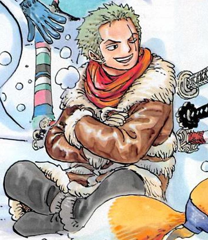
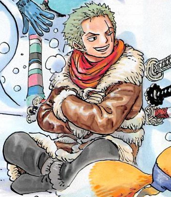

Rol
Capitan
Raza
Humano
Fruta
Hito Hito no Mi: modelo Nika
Origen
East Blue
(Villa Foosha)
Edad
19 años
Altura
174 cm
Estado
Vivo
Recompensa
3.000.000.000
Monkey D. Luffy (モンキー・Ｄ・ルフィ Monkī Dī Rufi?), más conocido como Luffy «Sombrero de Paja» (麦わらのルフィ Mugiwara no Rufi?) es el protagonista principal de la serie de manga y anime One Piece. Es el capitán y fundador de los Piratas de Sombrero de Paja así como un de los Cuatro Emperadores que gobiernan los mares del Nuevo Mundo. Comió una fruta del diablo llamada fruta Gomu Gomu, que le convirtió en un hombre de goma. Además de esto, posee varias habilidades que le hacen ser un pirata más que especial; un gran ejemplo de ello es la capacidad de usar el haoshoku haki ―que sólo lo posee una persona dentro de un millón ― y poseer también los otros dos tipos de haki. Su objetivo en la vida es convertirse en el próximo Rey de los Piratas, encontrar el legendario tesoro conocido como el "One Piece", que perteneció al anterior Rey de los Piratas Gol D. Roger, y conquistar el Nuevo Mundo liderando una tripulación formada por grandes piratas.

 
